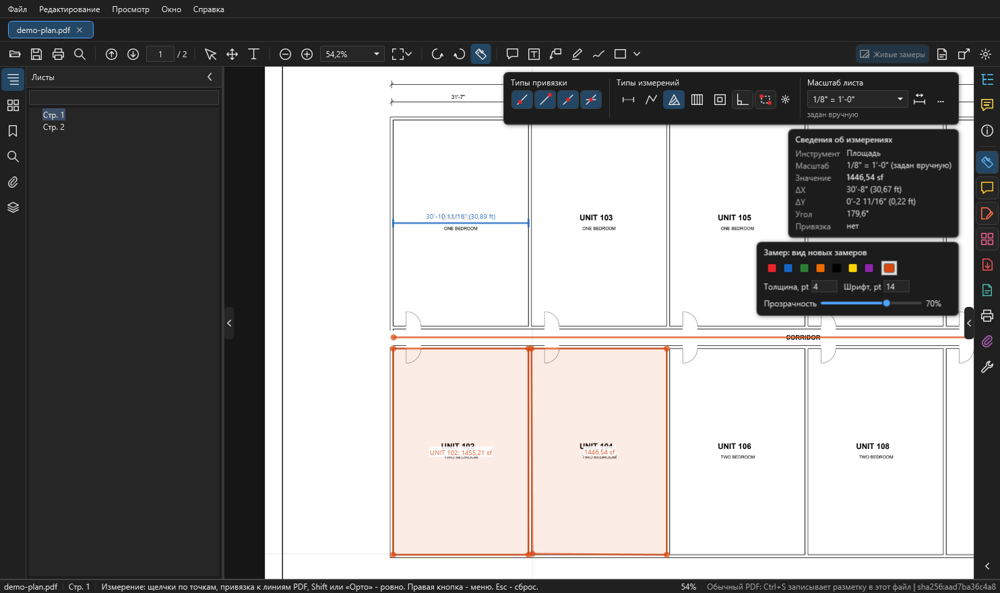
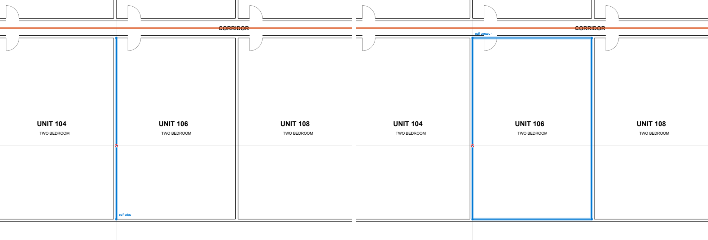
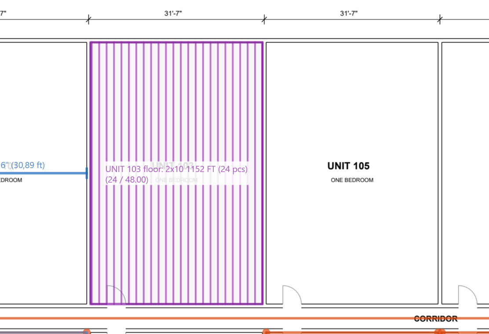
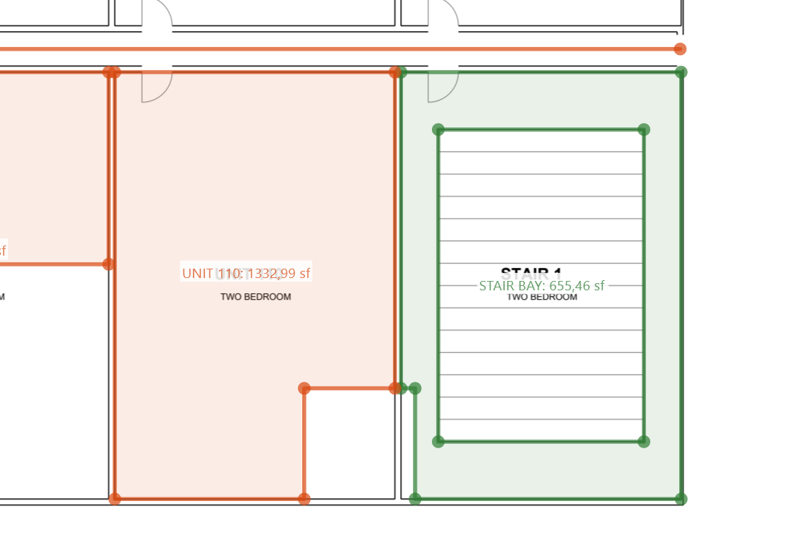
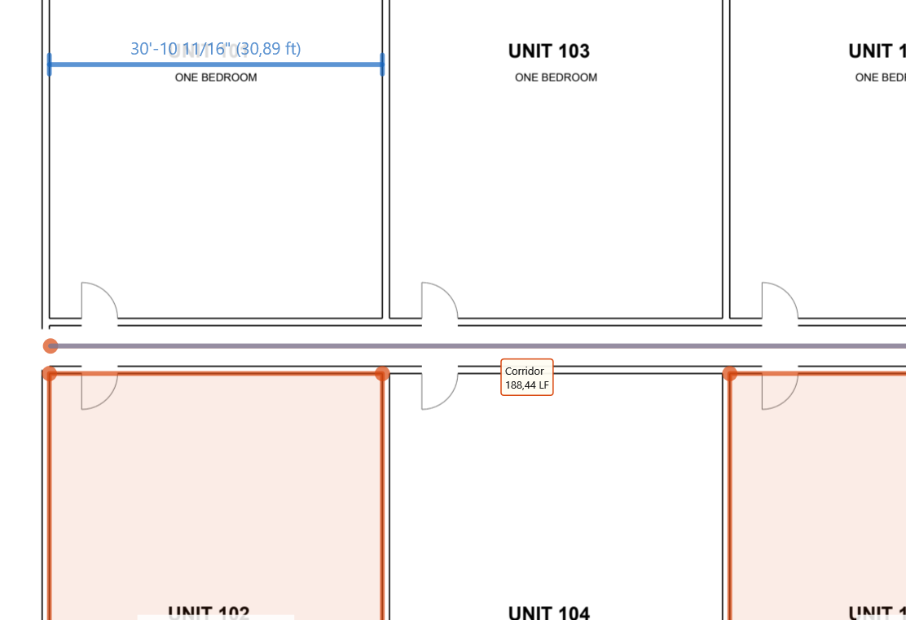
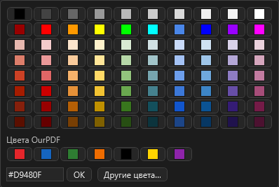
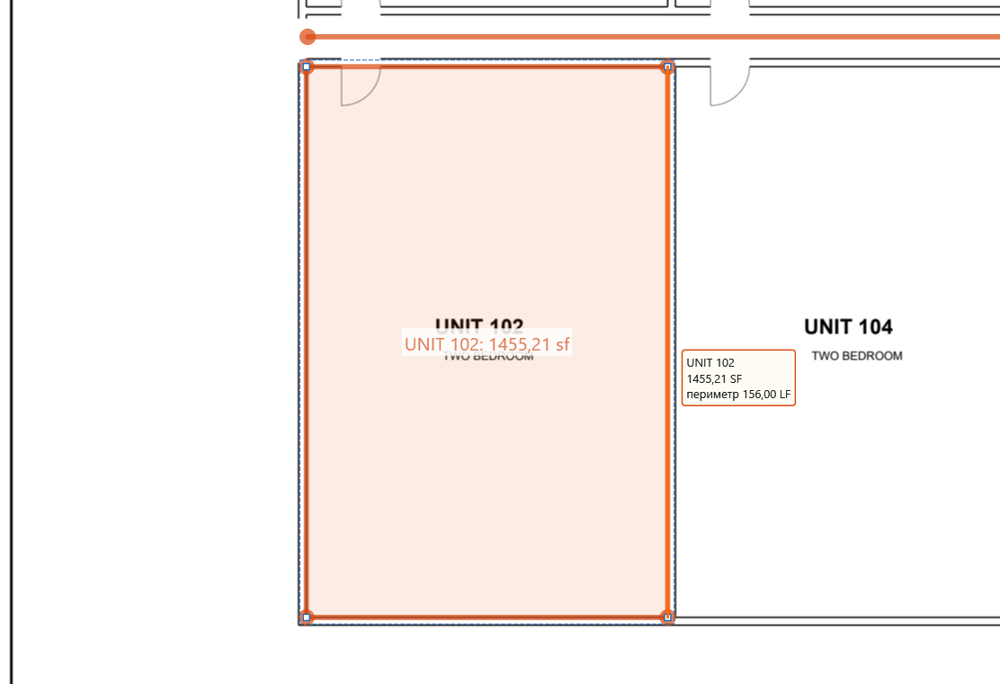
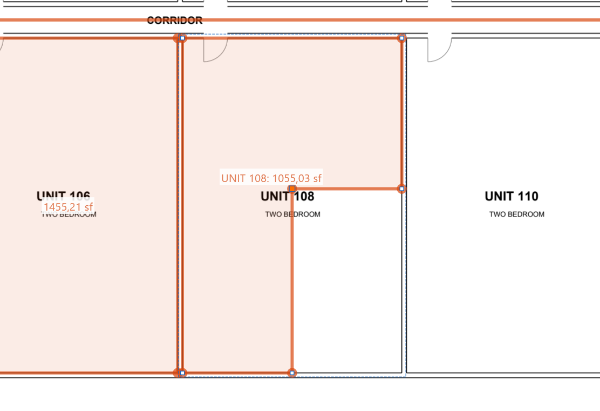
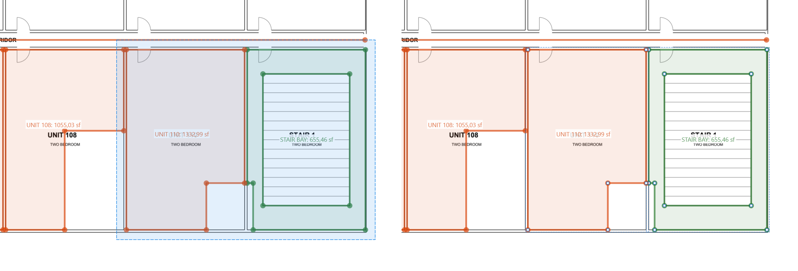
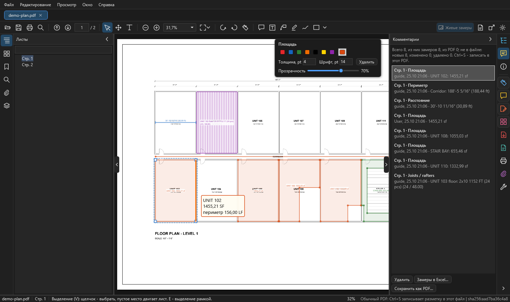

Измерения¶
Главная часть OurPDF. Замеры как в Acrobat (расстояние, периметр, площадь) плюс то, к чему привыкли в OurPlanCore: клавиши R, L, A, J, X, C, режимы Орто и Box, Tab по линии чертежа, вырезы, joists и extra joists, сдвиг граней, выделение рамкой, длины в LF при наведении. Здесь по шагам: масштаб, панель, каждый вид замера, правка, удаление точек, список и Excel.

Коротко¶
| Задача | Клавиша | Как | Что получится |
|---|---|---|---|
| включить измерение | Ctrl+Shift+M | кнопка-линейка на панели или справа на полосе | панель "Измерение" справа сверху |
| размер между двумя точками | R | два щелчка | длина 12'-6" (12.50 ft) |
| длина стены, ломаная | L | щелчки по точкам, C, Enter или двойной щелчок | длина ломаной в LF |
| площадь комнаты | A | щелчки по углам, замкнуть | SF по центру площади |
| joists / rafters | J | обвести площадь, две точки вдоль балок | штуки и длины расчётом OurPlanCore |
| вырез из площади | X | рамка или многоугольник поверх площади | дырка, откус или деление |
| прямоугольник двумя углами | F9 | режим Box для площади, линии, joists, выреза | замер по двум углам |
| строго по горизонтали или вертикали | F8 | режим Орто; Shift временно | ровная линия |
| взять линию чертежа целиком | Tab | навести на линию до первой точки | грань, потом контур |
Штук (Count), Beam и Openings в OurPDF нет: это инструменты OurPlanCore.
Масштаб и калибровка¶
Без масштаба значения пишутся в дюймах на бумаге. Масштаб хранится у каждого листа отдельно и влияет только на замеры OurPDF: такеоффы OurPlanCore он не меняет.
Выбрать или ввести масштаб¶
- Включите измерение: Ctrl+Shift+M или кнопка-линейка.
- В поле "Масштаб листа" справа сверху выберите значение из списка:
- архитектурные
1/32" = 1'-0"до3" = 1'-0"; - инженерные
1" = 10'до1" = 200'; - метрические
1:1до1:1000.
- архитектурные
- Или впишите свой:
1/8" = 1'-0",1" = 20',1:100,1 in = 8 ftи нажмите Enter. - Под полем видно, откуда масштаб: "задан вручную", "по калибровке", "из замеров в PDF" или "из OurPlanCore". Пока масштаба нет, там написано "не задан: выберите, введите или Калибровать".
Масштаб берите из штампа или подписи под видом (SCALE: 1/8" = 1'-0"), потом проверьте его одним замером по размерной цепочке.
Калибровать по известному размеру¶
Нужно, когда масштаб на листе не указан или лист распечатан не в масштабе.
- Нажмите кнопку калибровки справа от поля масштаба.
- Щёлкните начало и конец отрезка известной длины, например размерной линии.
- В окне "Калибровка масштаба" введите реальную длину:
12'-6",25',3.5 m. - В строке состояния появится "Масштаб листа по калибровке: ...".
Запомнить масштаб в листе¶
Кнопка с булавкой рядом с полем масштаба (или правая кнопка при линейке, "Записать масштаб в лист PDF") записывает масштаб в сам PDF, как это делает Acrobat: в лист добавляется видовое окно с масштабом. Это та же запись, что Ctrl+S, с резервной копией прежнего файла. После этого файл открывается с этим масштабом в OurPDF, Acrobat и Bluebeam, на любом компьютере. Ctrl+S записывает заданный масштаб листа и сам, вместе с замерами.
Масштаб и точность для всех листов¶
Кнопка ... рядом с полем открывает окно "Масштаб и точность" (то же в меню правой кнопки при линейке: "Изменить масштаб и точность").
| Поле | Варианты |
|---|---|
| Масштаб листа | список или свой текст; у снимков OurPlanCore есть пункт "Как в OurPlanCore" |
| Единицы | футы-дюймы (12'-6"), футы (12.50 ft), дюймы, метры, сантиметры, миллиметры |
| Точность | знаменатель дюйма для ft-in или знаки после запятой |
| Применить | к этому листу или ко всем листам документа |
Замер, принятый из PDF другой программы, сохраняет свой масштаб, как в Acrobat. У снимков проектов OurPlanCore масштаб по умолчанию берётся из OurPlanCore.
Панель "Измерение"¶
Появляется справа сверху, когда включена линейка. Три группы:
| Группа | Кнопки |
|---|---|
| Типы привязки | четыре кнопки: к контурам (любая точка линии), к конечным точкам, к средним точкам, к пересечениям. По умолчанию включены все |
| Типы измерений | расстояние (R), периметр или линия (L), площадь (A), joists (J), вырез из площади (X); дальше режимы Орто (F8) и Box (F9) и шестерёнка joists: тип, шаг и уклон новых балок |
| Масштаб листа | поле со списком, кнопка калибровки, кнопка ... (масштаб и точность), под полем источник масштаба |
Под панелью окно "Сведения об измерениях": инструмент, масштаб, значение, ΔX, ΔY, угол, тип привязки. Его и саму панель можно спрятать правой кнопкой: "Скрыть окно сведений об измерениях", "Скрыть панель инструментов Измерение".
Привязки¶
- Курсор цепляется к линиям чертежа. Пока точка привязана, линия подсвечивается фиолетовым, а значок у курсора показывает тип привязки.
- Четыре типа включаются и выключаются кнопками "Типы привязки". Все сразу: правая кнопка, "Привязать к содержимому страницы".
- Радиус привязки задаётся в Настройках: "Радиус привязки, px", по умолчанию 10 (от 2 до 40).
- К линиям скрытых слоёв PDF привязка не цепляется (Слои).
- Через курсор при измерении идут тонкие горизонтальная и вертикальная направляющие, как в OurPlanCore. Выключаются в Настройках: "Направляющие у курсора при измерении".
Расстояние: размер между двумя точками¶
Зачем: проверить масштаб, снять размер, который не подписан на чертеже.
- Нажмите R (или кнопку "Расстояние" в панели).
- Щёлкните начало и конец.
- Замер готов сразу после второго щелчка. Длина пишется как
12'-6"и в скобках футы.
Расстояние рисуется размерной линией, как Ruler в OurPlanCore: засечки поперёк концов, а размер всегда подписан на листе (у периметра длина видна при наведении).
Линия и периметр: длина по точкам¶
Зачем: длина стены, ломаной, периметр комнаты в LF.
- Нажмите L (кнопка "Периметр").
- Щёлкайте по точкам по оси стены, угол за углом.
- Закончите: C (как в OurPlanCore), Enter или двойной щелчок.
- Backspace убирает последнюю точку, Esc отменяет весь замер.
Для прямоугольного периметра включите Box (F9): линия в Box рисуется двумя углами и получается замкнутым прямоугольником по периметру.
Площадь: комната, этаж, балкон¶
Зачем: SF комнаты, этажа, балкона.
- Нажмите A (кнопка "Площадь").
- Щёлкайте по углам контура.
- Замкните: щелчок по первой точке, двойной щелчок, Enter или C.
- Значение в sf появится по центру площади, за вычетом вырезов.
- Чтобы подписать комнату, дважды щёлкните по замеру и введите подпись (
UNIT 102): она пишется перед значением.
Быстрее: прямоугольник через Box (F9, два угла) или замкнутый контур комнаты через Tab (Tab).
Box: прямоугольник двумя углами (F9)¶
Как в OurPlanCore. Режим действует на площадь, линию, joists и вырез.
- Нажмите F9 или кнопку Box в панели.
- Выберите тип (A, L, J или X).
- Щёлкните первый угол: прямоугольник тянется за курсором.
- Щёлкните противоположный угол.
- Ещё раз F9 возвращает рисование по точкам.
Линия в Box - замкнутый прямоугольник по периметру. Box можно включить по умолчанию в Настройках: "Box: площадь, линия и вырез двумя углами (F9)".
Орто: строго по горизонтали или вертикали (F8)¶
- F8 или кнопка Орто в панели ведёт линию строго по горизонтали или вертикали.
- Shift делает то же на время, пока зажат. При включённом Орто Shift, наоборот, отпускает линию.
- Орто можно включить по умолчанию в Настройках: "Орто по умолчанию (Shift инвертирует)".
Tab: взять линию чертежа целиком¶
Как edge snap в OurPlanCore: вместо щелчков по углам берёте линию или контур, уже нарисованный в PDF.

pdf edge). Справа: второй Tab, замкнутый контур комнаты UNIT 106 (pdf contour). Щелчок сразу даёт площадь комнаты.- Выберите тип замера и не ставьте ни одной точки.
- Наведите курсор на линию чертежа и нажмите Tab: подсветится грань (эта линия).
- Ещё раз Tab: контур, вся цепочка линий; если она замыкается, то замкнутый контур комнаты.
- Дальше Tab перебирает полилинии и соседние грани и возвращается к обычным точкам.
- Щелчок берёт то, что подсвечено. Esc отменяет.
Что получается по типам:
| Тип | Грань | Цепочка |
|---|---|---|
| площадь, вырез, joists | замкнутый контур сразу становится площадью (или вырезом, или зоной joists); открытая цепочка ставит свои точки, дальше щёлкайте как обычно | |
| периметр | грань | вся цепочка, замкнутая с возвратом в первую точку |
| расстояние | расстояние по грани | периметр по цепочке |
Наведение на другую линию начинает снова с точек, как в OurPlanCore. Двери и небольшие разрывы в стенах контур перепрыгивает.
Joists и rafters¶

UNIT 103 floor: 2x10 1152 FT (24 pcs).Зачем: штуки и длины joists или rafters по зоне, тем же расчётом, что в OurPlanCore (J Area).
Настроить новые балки¶
- В панели "Измерение" нажмите шестерёнку рядом с типами.
- Заполните окно "Joists / rafters: новые площади":
| Поле | Что писать |
|---|---|
| Тип (подпись) | 2x10, 11 7/8 TJI |
| Шаг, дюймы (o.c.) | 16, 19.2, 24 |
| Уклон (rafters) | пусто - плоские joists; для rafters 6:12, 6/12 или 4 (= 4:12), длины считаются по скату |
| Округление длины | без округления, вверх до фута, вверх до чётного фута, вверх до 2 футов |
| Крайняя балка у дальнего края | галка |
| Подробная подпись | длины по группам: заказ, без уклона, по уклону |
| Длина у каждой балки | галка |
Нарисовать зону¶
- Нажмите J.
- Обведите площадь по углам и замкните (или F9 и два угла, или Tab по контуру).
- Поставьте две точки вдоль балок. Enter (или правая кнопка, "Направление вдоль длинной стороны") кладёт балки вдоль длинной стороны.
- На листе появятся балки и подпись вида
2x10 64 FT (8 pcs): тип, общая длина, штуки.
Двойной щелчок по готовой зоне открывает те же настройки для неё ("Joists / rafters: эта площадь"): подпись перед итогом и галка "Задать направление заново (две точки вдоль балок)".
Extra joists (D)¶
- Выделите зону joists (V и щелчок).
- Нажмите D.
- Щёлкайте внутри зоны: каждая лишняя балка встаёт по направлению joists и подсвечивается.
- Shift и щелчок убирает ближайшую extra.
- D или Esc: выход.
Extra идут в итог и отдельным блоком "Extra" в ноте.
Меню правой кнопки у зоны joists¶
| Пункт | Что делает |
|---|---|
| Добавить extra joists (щелчками) | то же, что D |
| Убрать все extra joists | удаляет все extra этой зоны |
| Копировать ноту joists | подпись и список длин со штуками текстом, для Excel или письма |
| Настройки joists | окно настроек этой зоны |
Правила, что считать joists: Joist. Тот же инструмент в OurPlanCore: J Area.
Вырез из площади¶

Зачем: шахта, лестница, open to below внутри площади; угол, который не входит в комнату.
- Включите вырез: пятая кнопка в "Типах измерений", X или правая кнопка по площади, "Вырез из площади".
- Протяните рамку или щёлкайте по углам (замкнуть: первая точка, двойной щелчок, Enter).
- Результат зависит от того, где прошёл вырез:
- внутри площади получается дырка;
- через край кусок откусывается;
- поперёк всей площади она делится на две.
- Если перед вырезом площади были выбраны, режутся только они. Иначе режутся все площади и joists, которых коснулся вырез.
- Режим остаётся включённым для следующего выреза. Один Ctrl+Z отменяет весь вырез.
Точки и грани вырезов тянутся так же, как у самой площади. Если удалить все точки выреза, пропадёт сам вырез.
Значения: подписи и наведение¶

- Площадь подписана на листе по центру. Подпись замера (например
UNIT 102) пишется перед значением: двойной щелчок по замеру или правая кнопка, "Изменить разметку ярлыка". - Расстояние - размерная линия: засечки на концах, размер всегда на листе.
- Линии (периметр, а в живом слое снимка и линии OurPlanCore) показывают длину в LF только при наведении, рамкой у курсора поверх всего.
- Над площадью рамка при наведении показывает SF и периметр в LF.
- Подписать линии на листе всегда: Настройки, "Длины линий (LF) на листе" = "всегда подписаны", или правая кнопка при линейке, снять галку "Длины линий только при наведении (LF)".
- Скрыть все подписи значений: правая кнопка, "Скрыть подписи замеров". Значения останутся в списке и в окне сведений.
- Рамку при наведении можно выключить в Настройках: "Значение замера в рамке у курсора при наведении".
Вид замеров: цвет, толщина, шрифт¶
Карточка справа сверху: семь быстрых цветов (красный, синий, зелёный, оранжевый, чёрный, жёлтый, фиолетовый), квадратик палитры, толщина и шрифт в пунктах, прозрачность.
- Пока выбрана линейка, карточка задаёт вид новых замеров ("Замер: вид новых замеров").
- Если выбран замер, меняется он сам.
- По умолчанию у всех замеров, площадей тоже: цвет оранжевый
#D9480F, толщина 4, шрифт 14, прозрачность 70 %. - Квадратик палитры открывает любой цвет: сетка, "Цвета OurPDF", поле
#RRGGBBи кнопка "Другие цвета" (окно цветов Windows). Такой же квадратик есть у каждого цвета в Настройках.

Замеры рисуются как в Acrobat, но без стрелок: на концах и в вершинах кружки.
Правка готовых замеров¶

- Включите Выделение (V, обычный режим, в нём программа открывается).
- Щёлкните по замеру: он выбран, его точки показаны белыми квадратиками. Ctrl и щелчок добавляет к выбору. Щелчок по пустому месту двигает лист.
- Под курсором подсвечивается то, что возьмёт щелчок: весь замер, у выбранного его грань (оранжевым) или точка.
- Правьте:
| Что тянуть | Что происходит |
|---|---|
| точку | значение пересчитывается, точка цепляется к линиям чертежа |
| грань | обе точки грани идут за мышью, соседние грани тянутся; Shift - строго по горизонтали или вертикали |
| весь замер | тянуть изнутри площади или с Alt |
Ещё:
- Del без выбранных точек удаляет весь замер.
- Ctrl+C и Ctrl+V копируют и вставляют замеры и комментарии; на другой лист вставка идёт в то же место.
- Стрелки сдвигают выбранное.
- Ctrl+Z отменяет, Ctrl+Y повторяет. Меню
Редактированиепоказывает, какое действие отменится.
Удалить точку или грань¶

- Выберите замер (V, щелчок).
- Щёлкните по его точке: она станет оранжевой. Щелчок по грани выбирает обе её точки.
- Ctrl и щелчок добавляет ещё точки или грани.
- Нажмите Del: удаляются выбранные точки, а не весь замер. Соседние точки соединяются напрямую.
- Esc снимает выбор точек, Ctrl+Z возвращает удалённое.
То же через правую кнопку по точке или грани: "Удалить точку", "Удалить грань (её две точки)", "Удалить выбранные точки (N)".
Ограничения: у площади остаётся минимум 3 точки, у линии 2. Точки выреза тоже удаляются; все точки выреза убирают сам вырез.
Выделение рамкой (E)¶

- Нажмите E: включится выделение рамкой.
- Протяните рамку по пустому месту:
- слева направо выделяется то, что целиком внутри;
- справа налево выделяется всё, что рамка задела.
- Ctrl с рамкой добавляет к выбору. Щелчок по пустому месту снимает выбор.
- Дальше Del удаляет, перетаскивание сдвигает, Ctrl+C копирует.
- V возвращает обычное выделение, где пустое место двигает лист.
Средняя и правая кнопки мыши двигают лист всегда, в любом режиме.
Список замеров и Excel¶

Удалить, Замеры в Excel..., Сохранить как PDF....- Откройте вкладку "Комментарии" на полосе справа.
- Сверху итог: "Всего N, из них замеров N, из PDF N; не в файле: новых, изменено, удалено. Ctrl+S - записать в этот PDF".
- Каждая строка: страница, тип, автор, время, подпись и значение. Щелчок по строке показывает замер на листе.
- "Замеры в Excel..." сохраняет книгу
<имя PDF> - замеры.xlsx, лист "Замеры", по строке на замер.
Колонки Excel: Лист, Стр., Тип, Значение, Ед., Подпись, Метка, Масштаб, Источник масштаба, Точек, Автор, Создано.
То же из меню: Файл > Экспорт разметки измерений в Excel, правая кнопка при линейке или Экспорт PDF > Замеры в Excel на полосе справа. Если замеров нет, строка состояния подскажет включить разметку измерений и измерить что-нибудь.
Меню правой кнопки¶
При линейке (инструмент Измерение):
| Пункт | Что делает |
|---|---|
| Завершить измерение, Отменить измерение | пока замер рисуется |
| Направление вдоль длинной стороны, Отменить joists | на шаге направления joists |
| Изменить масштаб и точность | окно "Масштаб и точность" |
| Изменить разметку ярлыка | подпись выбранного замера |
| Включить / Отключить разметку измерений | выключено: на листе остаётся только последний замер и не сохраняется |
| Включить / Отключить орто | как F8 |
| Box: двумя углами прямоугольника | как F9 |
| Скрыть / Показать подписи замеров на листе | значения на листе |
| Длины линий только при наведении (LF) | или всегда на листе |
| Вырез из площади | как X |
| Скрыть / Показать линейки | линейки по краям листа |
| Привязать к содержимому страницы | привязка вкл и выкл целиком |
| Экспорт разметки измерений в Excel | как кнопка "Замеры в Excel" |
| Установки | окно Настроек |
| Скрыть окно сведений, Скрыть панель Измерение | убрать лишнее с листа |
По выбранному замеру (инструмент Выделение): удалить точку или грань под курсором, вырез из площади, изменить текст, удалить, отменить, скрыть подписи замеров, записать разметку в этот PDF.
Внизу любого меню правой кнопки: масштаб вида 25 % - 400 %, "Реальный размер" (100 % = размер листа, как в Acrobat), по размеру страницы, по ширине, по содержимому.
Замеры из Acrobat, Bluebeam и других программ¶
- Пометки, которые уже есть в PDF, при открытии становятся пометками OurPDF: замеры Acrobat, Bluebeam, Nitro в их масштабе, карандаш, тексты и выноски, фигуры, облака, ломаные. Их можно выделять, двигать, править и удалять; значения пересчитываются и совпадают с тем, что показывала та программа.
- Замер, сделанный в другом масштабе на том же листе, хранит свой масштаб.
- Зачёркивания, штампы, ссылки, ответы и скрытые аннотации остаются такими, как их рисует PDF.
- Выключить приём: Настройки, "Принимать пометки из PDF при открытии".
- После Ctrl+S Acrobat сам перерисовывает замеры по их свойствам, поэтому OurPDF пишет их так, чтобы и там был наш вид: цвет, толщина, прозрачность, точки на концах, площадь без сплошной заливки. Замеры, записанные раньше по-старому (площадь в Acrobat была залита целиком), перезаписываются в новом виде при следующем Ctrl+S этого файла.
- Вырезы площадей сохраняются в файле и возвращаются в OurPDF; в Acrobat площадь видна контуром.
Если что-то не так¶
| Что видно | Почему и что делать |
|---|---|
| значения в дюймах "на бумаге" | у листа нет масштаба: задайте его (Масштаб) |
| размер не совпадает с размерной цепочкой | неверный масштаб или лист распечатан не в масштабе: откалибруйте по известному размеру |
| курсор не цепляется к линии | выключен тип привязки или вся привязка ("Привязать к содержимому страницы"), либо линия на скрытом слое |
| Tab ничего не берёт | точка уже поставлена: Tab работает до первой точки; или курсор не на линии чертежа (у сканов линий нет) |
| у линии не видно длины | длины линий показываются при наведении; подписать всегда можно в Настройках |
| вырез отрезал не ту площадь | без выбора режутся все площади под вырезом: сначала выберите нужные, Ctrl+Z отменит весь вырез |
| Del удалил весь замер | точки не были выбраны: сначала щелчок по точке или грани |
| замеры не видны в Acrobat | они ещё в профиле OurPDF: нажмите Ctrl+S (Сохранение) |
См. также¶
- Окно программы
- Комментарии и сохранение
- Горячие клавиши: все клавиши и отличия от OurPlanCore
- Инструменты замера OurPlanCore, Правка и привязки OurPlanCore
- Что мерить: SQFT 1st-5th Floors, Joist, Exterior